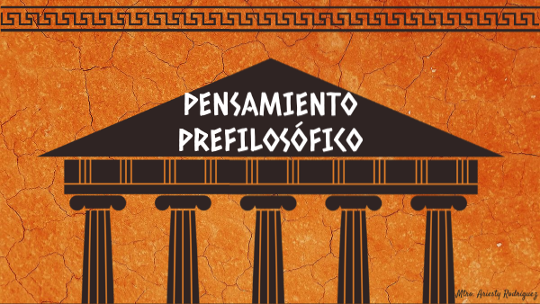

La prefilosofía se refiere al conjunto de ideas, creencias y criterios de pensamiento que precedieron a la era en la que se
desarrolló la filosofía como la principal manera de buscar las verdades y explicaciones de los diversos aspectos de la vida
humana. En este sentido, las creencias mágico-religiosas son las que predominan en esta etapa.
Antes de la introducción del pensamiento filosófico, existió una corriente de conocimiento prefilosófico caracterizado por el
pensamiento mágico, una mezcla entre lo que se percibía a través de los sentidos y la imaginación. Los precursores de esta
corriente son conocidos como pensadores presocráticos, es decir, anteriores a Sócrates (470-399 a.C.)¹.
Estos pensadores introdujeron en el mundo un nuevo tipo de conocimiento y su principal objetivo era la búsqueda de la
sabiduría. Sus investigaciones marcaron el camino para lo que pronto sería conocido como filosofía y también facilitaron el
surgimiento de una de las más importantes disciplinas que ha caracterizado el pensamiento occidental: la ciencia.
El conocimiento prefilosófico se originó en la ciudad jónica de Mileto, en la costa del Mar Egeo, en Asia Menor. Aunque la
comprensión del conocimiento prefilosófico es compleja debido a la escasez de registros de estos filósofos, sus aportes son
reconocidos como las ideas fundadoras de la ciencia moderna.

Mito:
Un mito es un relato tradicional y sagrado, cargado de simbolismo, que narra acontecimientos extraordinarios y trascendentales,
a menudo involucrando a seres sobrenaturales o fantásticos. Los mitos ofrecen respuestas a grandes interrogantes existenciales
y son una forma en que una cultura transmite sus valores y creencias a las generaciones futuras.
Magia:
La magia puede entenderse de dos maneras. Tradicionalmente, se refiere a la creencia en que a través de rituales, hechizos y
saberes arcanos, pueden manipularse fuerzas sobrenaturales para afectar la realidad. En otro sentido, también se refiere al
arte de producir ilusiones en un escenario, empleando trucos que dan la sensación de que hay fuerzas invisibles y
sobrenaturales puestas en acción.
Religión:
La religión es un sistema de creencias, comportamientos y valores culturales, éticos y sociales, a través de los que una
comunidad se vincula con lo sagrado y lo trascendente. Las religiones proporcionan respuestas acerca de cuestiones como
la creación del mundo, el sentido de la existencia, la vida después de la muerte y el origen del sufrimiento.